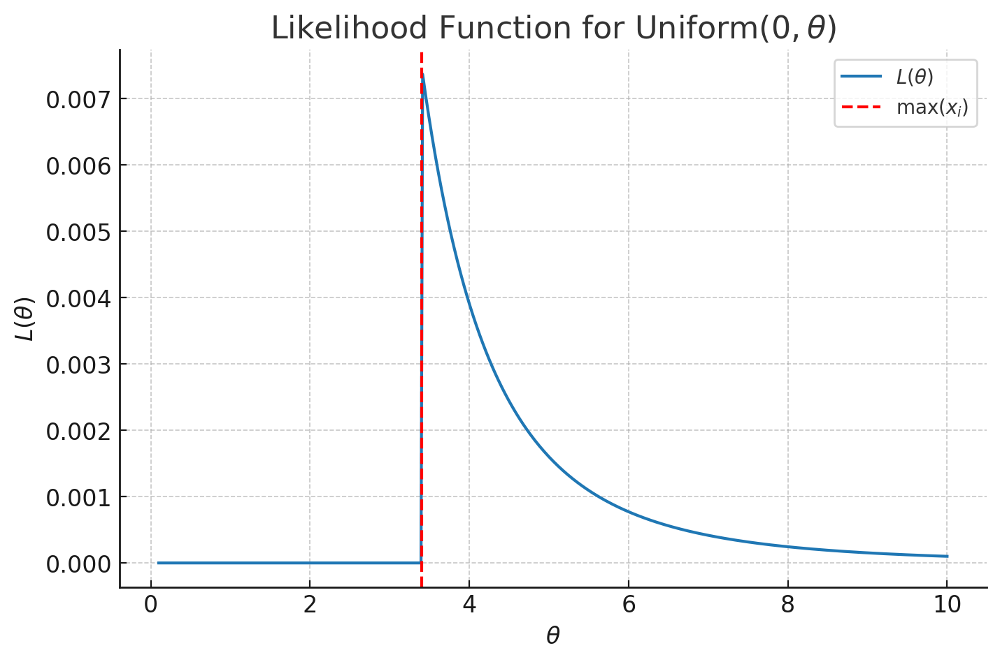

flowchart LR A(PDF) --> B(Joint PDF) --> C(Likelihood Function) --> D(Log-Likelihood Function) --> E(Maximise)
1. Probability Distribution
A random variable is a quantity that is random. It has a probability distribution.
E.g. X = roll of a dice
The sample space is the set of all possible outcomes of a random variable. This is also called the support of a function.
\[ S = {1,2,3,4,5,6} \]
Different values occur with different probabilities. We can describe this with a probability distribution.
P(X=1) = 1/6
P(X=2) = 1/6
P(X=3) = 1/6
…A common way to describe this is with a function as above. We give an input (e.g. \(X=1\)) and get an output (\(\frac{1}{6}\)). This is a probability mass function. We can represent this graphically.
In this case, a dice roll is a discrete random variable.
With a continuous random variable, we have a continuous distribution. The probability of any specific value is infinitesimally small, so we consider ranges and call the distribution the probability density function.
A parameter is a number that controls the properties of a probability distribution.
2. Distributions
A distribution is the list of possible values a random variable can take. We will look at three important distributions: Bernoulli, Uniform and Normal.
2.1. Bernoulli Distribution
A Bernoulli distribution describes an experiment that has two possible outcomes, i.e. success/failure, heads/tails, etc.
\[ X \sim \text{Bernoulli}(p) \]
The probability of the successful and unsuccessful outcomes are: \[ P(X=1) = p \] \[ P(X=0) = 1-p \]
The sample space is: \[ P \in [0,1] \]
The sample space is also known as the support.
We can alternatively write this as a probability mass function (PMF):
\[ f(x) = \begin{cases} p & x = 1 \\[6pt] 1-p & x = 0 \\[6pt] 0 & \text{otherwise} \end{cases} \]
A way of rewriting this is: \[ f(x) = p^{x} (1-p)^{\,1-x} \]
2.2. Uniform Distribution
This is a continuous distribution where every value between and min and a max value is equally likely.
\[ X \sim \text{Uniform}(a,b) \]
As this is a continuous distribution, the mass of any point is infinitesimally small, so we have a probability density function (PDF) rather than a probability mass function (PMF).
\[ f(x) = \begin{cases} \dfrac{1}{b-a} & a \leq x \leq b \\[6pt] 0 & \text{otherwise} \end{cases} \]
The sample space is: \[ S = (a, b) \]
2.3. Normal Distribution
Centred on the mean \(\mu\). The spread is defined the standard deviation \(\sigma\).
\[ X \sim \mathcal{N}(\mu, \sigma^{2}) \]
It is defined by these two parameters.
\[ f(x) = \frac{1}{\sqrt{2\pi\sigma^{2}}} \exp\!\left( -\frac{(x-\mu)^{2}}{2\sigma^{2}} \right), \quad -\infty < x < \infty \]
3. Expected Value
For a sample, we have a sample mean depending on our observations. It changes each time we observe more data. \[ \bar{x} = \frac{\sum_{i=1}^{n} x_i}{n} \]
The aim is to collect enough data that this is a reasonable approximation of the true population mean.
For a population, we have the expected value: \[ \begin{aligned} E[X] &= \mu \\[6pt] &= \sum_{x \in S} x \, P(X = x) \end{aligned} \]
Or for a continuous distribution: \[ E[X] = \int_{x \in S} x f(x) \, dx \]
3.1. Expected Value of a Bernoulli Random Variable
Recall the PMF: \[ f(x) = \begin{cases} p & x = 1 \\[6pt] 1-p & x = 0 \\[6pt] 0 & \text{otherwise} \end{cases} \]
And the definition of expectation: \[ E[X] = \mu = \sum_{x \in S} xP(X=x) \]
Substituting the first into the second equation, we get: \[ E[X] = 0 \cdot (1-p) + 1 \cdot p = p \]
3.2. Expected Value of a Uniform Random Variable
This is continuous, so we integrate the PDF:
Expected value for a continuous distribution \[ \begin{aligned} E[X] &= \int_{x \in S} x f(x) \, dx \\[6pt] &= \int_{0}^{\theta} x \cdot \frac{1}{\theta} \, dx \\[6pt] &= \frac{1}{\theta} \left[ \frac{x^{2}}{2} \right]_{0}^{\theta} \\[6pt] &= \frac{1}{\theta} \cdot \frac{\theta^{2}}{2} \\[6pt] &= \frac{\theta}{2}. \end{aligned} \]
3.3. Expected Value for a Normal Random Variable
Again, this is a continuous distribution, so we can integrate the PDF. See here for the integral.
Intuitively, we know that a Normal distribution is symmetric and defined by \(\mu\) and \(\sigma\). So the expected value is \(\mu\).
4. Estimators and Method of Moments
The goal in a lot of statistics is to learn (estimate) some unknown parameters.
Some terminology:
- Estimand - the parameter we want to estimate. E.g. \(p\), \(\mu\), \(\theta\)
- Estimate - a concrete value of our estimand based on the data. E.g. 0.4, 3, 12
- Estimator - how do we get a good estimate for a particular distribution.
We want a method that allows us to create a good estimate. A formula/algorithm that allows us to estimate an estimand is an estimator. It takes data as inputs and outputs an estimate of a parameter.
The method of moments is one such estimator method. It relies on the 1st moment: the expected value.
We begin with two facts:
- \(E[X] = f(\theta)\) - the expected value is some function of the parameters
- \(E[X] \approx \bar{X}\) - the sample mean should be approximately the population mean
Therefore we can substitute these: \[ \bar{X} \approx f(\theta) \]
\(\bar{X}\) is a known value calculated from our data. So this gives us an equation where \(\theta\) is our unknown variable that we solve for.
4.1. Method of Moments Estimator for a Bernoulli Distribution
We start with our two basic facts:
- \(E[X] \approx \bar{X}\) - our sample mean should be close to our population mean
- \(E[X] = p\) - for a Bernoulli distribution, the population mean is \(p\)
Substituting this, we get an estimate of the parameter \(p\) using the method of moments: \[ p ~= \bar{X} \]
Note the approximately equal sign in the equation above. We don’t know the true population parameter so it isn’t equal, only an approximation.
We can define this estimate as \(\hat{p}\), which is defined as being equal to this estimate.
\[ \hat{p} = \bar{X} = \frac{\sum x_i}{n} \]
4.2. Method of Moments Estimator for a Uniform Distribution
We start with our two basic facts:
- \(E[X] ~= \bar{X}\) - our sample mean should be close to our population mean
- \(E[X] = \frac{\theta}{2}\) - population mean for a uniform distribution
So we can substitute this to get our method of moments estimator for \(\theta\): \[ \begin{aligned} \frac{\theta}{2} &\approx \bar{X} \\[6pt] \;\;\Rightarrow\;\; \theta &\approx 2\bar{X} \\[6pt] \;\;\Rightarrow\;\; \hat{\theta} &= 2\bar{X} \end{aligned} \]
\[ \boxed{\hat{\theta} = 2\bar{X}} \]
4.3 Method of Moments Estimator for a Normal Distribution
We start with our two basic facts:
- \(E[X] ~= \bar{X}\) - our sample mean should be close to our population mean
- \(E[X] = \mu\) - population mean for a Normal distribution
Therefore, we substitute to get our method of moments estimator for \(\mu\): \[ \begin{aligned} \mu &\approx \bar{X} \\[2pt] \hat{\mu} &= \bar{X} \end{aligned} \]
5. Unbiased Estimators
5.0. Background on Estimators
5.0.1. Distribution of Estimators
Our data is random. It is the input to our estimator, therefore our estimate is also a random variable.
The distribution of an estimator is called a sampling distribution.
We want the estimator to be centred on the true value. This is an unbiased estimator. In other words, we want the expected value of the estimate to equal its true value, i.e. we want
\[ E[\hat{\theta}] = \theta \]
We can define the bias as the difference between these two: \[ Bias = E[\hat{\theta}] - \theta \]
If \(Bias = 0\) then we have an unbiased estimator.
5.0.2. Properties of Expected Value
The linearity of expectation results below help us prove properties of the estimators.
The law of the unconscious statistician: \[ E[cX] = c\,E[X], \quad \text{where $c$ is a constant} \]
This follows from the definition of expected value. For example, consider a discrete distribution: \[ \begin{aligned} E[X] &= \sum_{x \in S} x\, P(X=x) \\[2pt] \Rightarrow E[cX] &= \sum_{x \in S} c x \, P(cX = c x) \\[2pt] &= \sum_{x \in S} c x \, P(X = x) \quad \text{(since } P(cX = c x) = P(X = x)\text{)} \\[2pt] &= c \sum_{x \in S} x \, P(X = x) \\[2pt] &= c E[X] \end{aligned} \]
The sum of random variables: \[ E[X+Y] = E[X] + E(Y) \]
Or more generally, the expected value of any sum equals the sum of expected values. This holds regardless of independence.
\[ E\Bigg[\sum_{i=1}^{n} X_i\Bigg] = \sum_{i=1}^{n} E[X_i] \]
5.1. The Bias of a MoM Estimator for a Bernoulli Distribution
Recall that our method of moments estimator was: \[ \hat{p} = \bar{X} \]
We want to know if this equals \(E(p)\). This would make it an unbiased estimator.
\[ \begin{aligned} E[\hat{p}] &= E\Bigg[\frac{1}{n} \sum_{i=1}^{n} X_i \Bigg] \\[2pt] &= \frac{1}{n} E\Bigg[\sum_{i=1}^{n} X_i \Bigg] \\[2pt] &= \frac{1}{n} \sum_{i=1}^{n} E[X_i] \quad \text{(using the linearity of expectation)} \\[2pt] &= \frac{1}{n} \sum_{i=1}^{n} p \\[2pt] &= p \end{aligned} \]
The expected value of our estimator is the population value, therefore it is an unbiased estimator.
5.2. The Bias of a MoM Estimator for a Uniform Distribution
Recall that our method of moments estimator is: \[ \hat{\theta} = 2 \bar{X} \]
So the expected value of the estimate is: \[ \begin{aligned} E[\hat{\theta}] &= E\Bigg[ 2 \bar{X} \Bigg] \\[2pt] &= E\Bigg[ 2 \cdot \frac{1}{n} \sum_{i=1}^{n} X_i \Bigg] \\[2pt] &= \frac{2}{n} E\Bigg[ \sum_{i=1}^{n} X_i \Bigg] \quad \text{(taking constant outside)} \\[2pt] &= \frac{2}{n} \sum_{i=1}^{n} E[X_i] \quad \text{(linearity of expectation)} \\[2pt] &= \frac{2}{n} \sum_{i=1}^{n} \frac{\theta}{2} \quad \text{(substitute } E[X_i] = \theta/2 \text{)} \\[2pt] &= \frac{2}{n} \cdot n \cdot \frac{\theta}{2} \\[2pt] &= \theta \end{aligned} \]
Therefore, this is an unbiased estimator, because \(E(\hat{\theta}) = \theta\).
5.3. The Bias of a MoM Estimator for a Normal Distribution
Recall that: \[ \hat{\mu} = \bar{X} \]
The expected value of this estimator is: \[ \begin{aligned} E[\hat{\mu}] &= E[\bar{X}] \\[2pt] &= E\Bigg[ \frac{1}{n} \sum_{i=1}^{n} X_i \Bigg] \\[2pt] &= \frac{1}{n} \sum_{i=1}^{n} E[X_i] \quad \text{(Sum of expectations = expectation of sums)} \\[2pt] &= \frac{1}{n} \sum_{i=1}^{n} \mu \\[2pt] &= \frac{1}{n} \cdot n \mu \\[2pt] &= \mu \end{aligned} \]
Therefore, this is an unbiased estimator, \(E(\hat{\mu}) = \mu\)
6. Variance of Distributions
Variance is a measure of spread. It is the average squared distance from the mean. Squared because if we just took a plain average, the pluses and minuses would always cancel out and give 0.
We could take the magnitude, but the discontinuity at \(x=0\) makes the maths less nice, so by convention we usually use squared distances. This is the same argument as L1 vs L2 norm.
\[ \begin{aligned} \mathrm{Var}(X) &= E\Big[(X - E[X])^2\Big] \\[2pt] &= E[X^2 - 2 X E[X] + (E[X])^2] \quad \text{(Expanding brackets)} \\[2pt] &= E[X^2] - 2 E[X] E[X] + (E[X])^2 \quad \text{(Linearity of expectation)} \\[2pt] &= E[X^2] - (E[X])^2 \end{aligned} \]
6.1. Variance of a Bernoulli Distribution
Remember that in the general case, the variance is defined as:
\[ \mathrm{Var}(X) = E[X^2] - (E[X])^2 \]
We already know the mean of a Bernoulli distribution is \(E[X] = p\) So we just need to find an expression for \(E[X^2]\).
Recall that for a Bernoulli distribution: \[ f(x) = \begin{cases} p & x = 1 \\[6pt] 1-p & x = 0 \\[6pt] 0 & \text{otherwise} \end{cases} \]
So \[ \begin{aligned} E[X^2] &= \sum_{x} x^2 P(X = x) \\[2pt] &= 0^2 \cdot (1-p) + 1^2 \cdot p \\[2pt] &= p \end{aligned} \]
Substituting into our variance formula: \[ \begin{aligned} \mathrm{Var}(X) &= E[X^2] - (E[X])^2 \\[2pt] &= p - p^2 \\[2pt] &= p(1-p) \end{aligned} \]
So the variance of a Bernoulli distribution is \(\mathrm{Var}(X) = p(1-p)\).
6.2. Variance of a Uniform Distribution
Again we start with that general formula for variance \[ \mathrm{Var}(X) = E[X^2] - (E[X])^2 \]
We know the the expected value for a uniform distribution is \(\frac{\theta}{2}\) and the PDF is \(f(x) = \frac{1}{\theta}\)
So \((E[X])^2 = \frac{\theta^2}{4}\). We just need to calculate \(E[X^2]\).
\[ \begin{aligned} E[X^2] &= \int_{0}^{\theta} x^2 \cdot \frac{1}{\theta} \, dx \\[2pt] &= \frac{1}{\theta} \int_{0}^{\theta} x^2 \, dx \quad \text{(Pulling constant outside the integral)} \\[2pt] &= \frac{1}{\theta} \left[ \frac{x^3}{3} \right]_{0}^{\theta} \\[2pt] &= \frac{1}{\theta} \cdot \frac{\theta^3}{3} \\[2pt] &= \frac{\theta^2}{3} \end{aligned} \]
Hence our variance expression is: \[ \begin{aligned} \mathrm{Var}(X) &= E[X^2] - (E[X])^2 \\[2pt] &= \frac{\theta^2}{3} - \frac{\theta^2}{4} \\[2pt] &= \frac{\theta^2}{12} \end{aligned} \]
6.3. Variance of a Normal Distribution
You can grind through the integrals to get an expression for the variance… we know that it will eventually simplify down to \(\mathrm{Var}(X) = \sigma ^2\) by the definition of a Normal distribution.
7. Variance of Estimators
7.0. Background on Variance
7.0.1. Why the Variance of an Estimator Matters
We want a lower variance for our estimator, i.e. the value we measure is in a tighter range near the true population mean.
An estimator with an unbiased mean but massive variance wouldn’t be very useful. On average, the survey results will reflect the true results, but any given survey may be wildly off the true population mean.
7.0.2. Properties of Variance
Similarly to the linearity properties of expected value, there are analogous results for variance.
If we scale our random variable by a constant, the variance squares all distances, so: \[ \mathrm{Var}(cX) = c^2 \mathrm{Var}(X) \]
For i.i.d. random variables: \[ \mathrm{Var}\Bigg(\sum_{i=1}^{n} X_i\Bigg) = \sum_{i=1}^{n} \mathrm{Var}(X_i) \]
7.1. Variance of the MoM Estimator of a Bernoulli Distribution
Recall that the MoM estimate is: \[ \hat{p} = \bar{X} = \frac{1}{n} \sum_{i=1}^{n} x_i \]
We want to find the variance, so rewrite it in a form where we can apply some of our variance rules: \[ \begin{aligned} \mathrm{Var}(\hat{p}) &= \mathrm{Var}\Bigg( \frac{1}{n} \sum_{i=1}^{n} X_i \Bigg) \\[2pt] &= \frac{1}{n^2} \, \mathrm{Var}\Bigg( \sum_{i=1}^{n} X_i \Bigg) \quad \text{(using } \mathrm{Var}(cX) = c^2 \mathrm{Var}(X) \text{)} \\[2pt] &= \frac{1}{n^2} \sum_{i=1}^{n} \mathrm{Var}(X_i) \quad \text{(variance of sum = sum of variances for i.i.d.)} \\[2pt] &= \frac{1}{n^2} \sum_{i=1}^{n} p(1-p) \quad \text{(using variance of a Bernoulli variable)} \\[2pt] &= \frac{1}{n^2} \cdot n \, p(1-p) \\[2pt] &= \frac{p(1-p)}{n} \end{aligned} \]
So \(\mathrm{Var}(\hat{p}) = \frac{p(1-p)}{n}\)
This means the variance always decreases with \(n\) more samples. The lowest variance is for \(p=0.5\); if positive or negative cases is very likely (e.g. 0.99) then we wouldn’t see much variance in our estimate because it is so certain. In the extreme case of \(p=0\) or \(p=1\), the variance is 0.
7.2. Variance of the MoM Estimator of a Uniform Distribution
Recall the the MoM Estimator is: \[ \hat{\theta} = 2 \bar{X} = \frac{2}{n} \sum_{i=1}^{n} x_i \]
We want to find an expression for the variance: \[ \begin{aligned} \mathrm{Var}(\hat{\theta}) &= \mathrm{Var}\Bigg( 2 \cdot \frac{1}{n} \sum_{i=1}^{n} X_i \Bigg) \\[2pt] &= \frac{4}{n^2} \, \mathrm{Var}\Bigg( \sum_{i=1}^{n} X_i \Bigg) \quad \text{(using } \mathrm{Var}(cX) = c^2 \mathrm{Var}(X) \text{)} \\[2pt] &= \frac{4}{n^2} \sum_{i=1}^{n} \mathrm{Var}(X_i) \quad \text{(variance of sum = sum of variances for i.i.d.)} \\[2pt] &= \frac{4}{n^2} \sum_{i=1}^{n} \frac{\theta^2}{12} \quad \text{(variance of a uniform distribution)} \\[2pt] &= \frac{4}{n^2} \cdot n \cdot \frac{\theta^2}{12} \\[2pt] &= \frac{\theta^2}{3n} \end{aligned} \]
This makes intuitive sense. As the distribution gets wider, the variance gets wider. As the number of samples increases, the variance decreases, i.e. we get a more certain estimate.
7.3. Variance of the MoM Estimator of a Normal Distribution
Recall that \[ \hat{\mu} = \bar{X} = \frac{1}{n} \sum_{i=1}^{n} x_i \]
So the variance is: \[ \begin{aligned} \mathrm{Var}(\hat{\mu}) &= \mathrm{Var}\Bigg( \frac{1}{n} \sum_{i=1}^{n} X_i \Bigg) \\[2pt] &= \frac{1}{n^2} \, \mathrm{Var}\Bigg( \sum_{i=1}^{n} X_i \Bigg) \quad \text{(using } \mathrm{Var}(cX) = c^2 \mathrm{Var}(X) \text{)} \\[2pt] &= \frac{1}{n^2} \sum_{i=1}^{n} \mathrm{Var}(X_i) \quad \text{(variance of sum = sum of variances for i.i.d.)} \\[2pt] &= \frac{1}{n^2} \sum_{i=1}^{n} \sigma^2 \quad \text{(variance of a Normal distribution)} \\[2pt] &= \frac{1}{n^2} \cdot n \, \sigma^2 \\[2pt] &= \frac{\sigma^2}{n} \end{aligned} \]
This gives the well-known result that for a normally-distributed random variable \(X_i ~ N(\mu, \sigma ^ 2)\), the mean of N such i.i.d. random variables is: \[ X_i \sim N(\mu, \frac{\sigma^2}{N}) \]
This comes up a lot in hypothesis testing because of the central limit theorem.
8. Maximum Likelihood Estimation
8.0. Background on MLE
8.0.1 Intuition
Maximum Likelihood Estimation (MLE) is an alternative approach to finding estimators using the Method of Moments (MOM)approach.
The idea is that we shift our perspective so that rather than thinking of PDFs as a function of the data \(x\) where parameters \(\mu\) and \(\sigma\) are unknown, we treat it as a function of the parameter \(\mu\) where our observed data \(x\) is known.
Typically we would think of the PDF for some distribution where \(\mu = 2\) and \(\sigma = 3\) as: \[ \begin{aligned} f(x) &= \frac{1}{\sigma \sqrt{2\pi}} \exp\left( -\frac{1}{2} \left( \frac{x-\mu}{\sigma} \right)^2 \right) \\[2pt] &= \frac{1}{3 \sqrt{2\pi}} \exp\left( -\frac{1}{2} \left( \frac{x-2}{3} \right)^2 \right) \end{aligned} \]
Instead, say we have observed one data point where \(x_1 = 4\). We treat \(\mu\) as the unknown and rewrite this as the likelihood function: \[ L(\mu) = \frac{1}{\sigma \sqrt{2\pi}} \exp\left( -\frac{1}{2} \left( \frac{4-\mu}{\sigma} \right)^2 \right) \]
Then to find a good estimate of the parameter, we find the maximum of the likelihood function.
In summary:
- PDF: Known parameters, unknown data
- Likelihood: Unknown parameters, known data.
8.0.2 Joint PDF
The probability of two things happening in succession is the joint probability.
For example, the joint probability of flipping two heads is \[ P(H \cap H) = 0.5 \cdot 0.5 = 0.25 \]
This is true of any number of (independent) events. So if we have observed some data \((x_1, x_2, ... x_n) = X\) then we can think about the joint probability distribution of all of these events \(P(X)\).
\[ f(X) = \prod_{i=1}^{n} f(x_i) \]
We assume all of the data (\(x_i\)s) are i.i.d., i.e. the same distribution parameters, for the following discussions.
For a Bernoulli distribution, the joint PMF is: \[ \begin{aligned} f(X) &= \prod_{i=1}^{n} f(x_i) \\[2pt] &= \prod_{i=1}^{n} p^{x_i} (1-p)^{1-x_i} \\[2pt] &= p^{x_1} (1-p)^{1-x_1} \cdot p^{x_2} (1-p)^{1-x_2} \cdots p^{x_n} (1-p)^{1-x_n} \quad \text{(Expanding out)} \\[2pt] &= p^{\sum_{i=1}^{n} x_i} (1-p)^{\sum_{i=1}^{n} (1-x_i)} \quad \text{(Collecting terms)} \\[2pt] &= p^{\sum_{i=1}^{n} x_i} (1-p)^{n - \sum_{i=1}^{n} x_i} \quad \text{(Simplifying)} \end{aligned} \]
For a Uniform distribution, the joint PDF is: \[ \begin{aligned} f(X) &= \prod_{i=1}^{n} f(x_i) \\[2pt] &= \prod_{i=1}^{n} \frac{1}{\theta} \\[2pt] &= \left(\frac{1}{\theta}\right)^{n} \end{aligned} \]
For a Normal distribution, the joint PDF is: \[ \begin{aligned} f(X) &= \prod_{i=1}^{n} f(x_i) \\[2pt] &= \prod_{i=1}^{n} (2 \pi \sigma^2)^{-1/2} \, \exp\Bigg(-\frac{(x_i - \mu)^2}{2 \sigma^2}\Bigg) \\[2pt] &= (2 \pi \sigma^2)^{-n/2} \, \exp\Bigg(-\frac{\sum_{i=1}^{n} (x_i - \mu)^2}{2 \sigma^2}\Bigg) \end{aligned} \]
We often call the joint PMF/PDF the “joint distribution”.
Remember that the “likelihood function” is just this same formula, but reframing what we see as the knowns vs unknowns. We treat the parameter as an unknown and the data as a known value.
8.0.3. Finding the MLE
We differentiate the likelihood function to find the maximum.
Because the likelihood function \(L(\theta)\) is a joint distribution, it will often contain lots of products and exponentials. It is therefore often more convenient to work with the log-likelihood function \(\ell(\theta)\) since logs convert products to sums which are easier to differentiate. We use the natural log to deal with the \(e\) values that often crop up. \[ \ell(\theta) = \log L(\theta) \]
The log function is monotonic, so the maximum of \(\ell(\theta)\) occurs for the same value of \(\theta\) as \(L(\theta)\), i.e. we are still maximising our original likelihood function even if we use the log-likelihood in our calculations for tractability.
To find the maximum of the log-likelihood, we set its derivative to 0 and solve for \(\theta\): \[ \frac{d \ell(\theta)}{d \theta} = 0 \]
The derivative function is sometimes called the “score function”.
8.0.4 Properties of Logarithms
Log of products = sum of logs \[ \log(xy) = \log(x) + \log(y) \]
Log of exponents \[ \log(a^b) = b \log(a) \]
And by extension \[ \log(1 /a) = \log(a^{-1}) = -\log(a) \]
8.0.5. Mean Squared Error
We used bias and variance to evaluate the goodness of our estimators.
We may want to compare a biased estimator vs an unbiased estimator. One method for doing so is to compare the mean squared error (MSE); the average squared distance from the true value.
\[ MSE(\hat{\theta}) = E[(\hat{\theta} - \theta)^2] \]
We can work through some algebra to get the identity: \[ \mathrm{MSE}(\hat{\theta}) = \mathrm{Bias}(\hat{\theta}) ^2 + \mathrm{Var}(\theta) \]
So for an unbiased estimator, the \(MSE = Variance\).
Biased estimators can still be useful. We want estimators which are close to the mean with small variance. We may have an unbiased estimator which has a large variance. An alternative biased estimator with small bias but much tighter variance could be more useful.
8.1. MLE Estimator for a Bernoulli Distribution
The general process is:
Recall that our PDF is: \[ f(x_i) = p^{x_i} (1-p)^{1-x_i} \]
And our joint PDF when taking the product of multiple random Bernoulli variables is: \[ f(X) = p^{\sum x_i} (1-p)^{n - \sum x_i} \]
Our likelihood function is just rewriting this joint PDF as a function of the parameters. Just the same thing. \[ L(p) = p^{\sum x_i} (1-p)^{n - \sum x_i} \]
Our log-likelihood is then: \[ \ell(p) = \log L(p) = \sum x_i \log(p) + (n - \sum x_i) log(1-p) \]
Now to find the maximum. \[ \frac{d\ell}{dp} = \frac{\sum_{i=1}^{n} x_i}{p} - \frac{n - \sum_{i=1}^{n} x_i}{1-p} = 0 \]
The solution to this is \(\hat{p}_{MLE}\).
$$ \[\begin{aligned} &\text{Multiply both sides by } p(1-p) \\[6pt] &\sum_{i=1}^{n} x_i (1-p) - (n - \sum_{i=1}^{n} x_i)\,p = 0 \\[10pt] &\text{Expand sums} \\[6pt] &\sum_{i=1}^{n} x_i - p \sum_{i=1}^{n} x_i - np + p \sum_{i=1}^{n} x_i = 0 \\[10pt] &\text{Collect \(p\) terms} \\[6pt] &p \big(- \sum_{i=1}^{n} x_i - n + \sum_{i=1}^{n} x_i \big) + \sum_{i=1}^{n} x_i = 0 \\[6pt] &\implies \sum_{i=1}^{n} x_i = np \\[6pt] &\implies \hat{p} = \frac{\sum_{i=1}^{n} x_i}{n} = \bar{X} \end{aligned}\]$$
So the MLE estimate of p is the same as the MoM estimate: \(\bar{X}\).
8.2. MLE Estimator for a Uniform Distribution
The PDF of each observation (random variable) \(x_i\) is: \[ f(x_i) = \begin{cases} \dfrac{1}{\theta}, & 0 \leq x_i \leq \theta \\[6pt] 0, & \text{otherwise} \end{cases} \]
The joint PDF is then the product of these: \[ f(X) = \prod_{i=1}^{n} f(x_i) = \begin{cases} \dfrac{1}{\theta^n}, & 0 \leq x_i \leq \theta \quad \text{for all } i \\[6pt] 0, & \text{otherwise} \end{cases} \]
The bound is important as it determines when this function is valid, which we need to consider when maximising the likelihood function. Note that all of the \(x_i\) values need to be in the bound, otherwise the product, i.e. the entire joint PDF, is 0.
The likelihood function is just reframing the joint PDF as a function of \(\theta%.\)$ L() = \[\begin{cases} \dfrac{1}{\theta^n}, & 0 \leq x_i \leq \theta \quad \text{for all } i \\[6pt] 0, & \text{otherwise} \end{cases}\]$$
We often take the log at this point to make the differentiation more tractable, but in this case we don’t need to.
We can plot \(L\), or differentiate it, to realise that the value of \(\theta\) asymptotically approaches infinity as \(\theta\) approaches 0. \[ \frac{dL}{d\theta} = -n \theta^{-n-1} \]

So is \(\theta_{MLE} = 0\)? Naively we would think so, but remember the bounds of the PDF; \(\theta\) has to be at least as high as the observations we have seen for the PDF to be valid. So the maximum of the observed \(x_i\) values is a lower bound. We can write this as \(x_{(n)}\), where the brackets indicate this is the nth element in the sorted list. The smallest allowable value of \(\theta\) maximises this function.
Therefore \(\hat{\theta}_{\mathrm{MLE}} = \max_{i} x_i\).
Note that this is different to our MoM estimate, which said that \(\theta_{MOM} = 2 \bar{X}\).
MLE bases the estimate of the upper bound parameter \(\theta\) on the maximum value we have seen. MoM says to take the average we have observed, that should be somewhere near the middle, so we double it to get an estimate of the upper bound parameter \(\theta\).
We know that \(\theta_{MOM}\) was unbiased, so \(\theta_{MLE}\) must be biased.
8.3. MLE Estimator for a Normal Distribution
Recall that for a Normal distribution, the joint PDF is: \[ f(X) = (2 \pi \sigma^2)^{-n/2} e^{-\sum_{i=1}^{n} \frac{(x-\mu)^2}{2 \sigma^2}} \]
So the likelihood is just reframing this as a function of the parameter \(\mu\): \[ L(\mu) = (2 \pi \sigma^2)^{-n/2} e^{-\sum_{i=1}^{n} \frac{(x-\mu)^2}{2 \sigma^2}} \]
Since we are taking logs the constant term at the front becomes an addition, and then the derivative of a constant is 0. So we can ignore it. The log-likelihood function is then: \[ \ell(\mu) = \frac{-1}{2 \sigma^2} \sum_{i=1}^{n} (x-\mu)^2 \]
To find the maximum, we take the derivative and set it to 0. \[ \begin{aligned} \frac{d l}{d \mu} &= -\frac{1}{2\sigma^2} \sum_{i=1}^{n} 2(x_i - \mu) = 0 \\ \implies \sum_{i=1}^{n} (x_i - \mu) &= 0 \\ \implies \sum_{i=1}^{n} x_i - n \mu &= 0 \\ \implies \hat{\mu} &= \frac{\sum_{i=1}^{n} x_i}{n} \\ &= \boxed{\bar{X}} \end{aligned} \]
So this is the same as the MoM estimator, \(\hat{\mu} = \bar{X}\).
9. Fisher Information and Cramer Rao Lower Bound (CRLB)
CRLB gives a proven lower bound for the variance of an estimator for certain distributions (in the exponential family). The starting point for this is to consider the information contained in one observation about our parameter \(\theta\). This is encompassed in the Fisher Information, defined as: \[ I_1(\theta) = -\mathbb{E}[\ell''(\theta)] \]
For \(n\) observations, this scales as: \[ I_n(\theta) = n I_1(\theta) \]
The intuition behind this is to think about the distribution for an estimator. For a very informative estimator, it is a tight distribution around the true value. So the curvature of the likelihood is high; it increases and then decreases rapidly either side of the true value. So the second derivative of the likelihood function tells us how tight the estimator is around the true value.
The Cramer Rao Lower Bound (CRLB) then tells us that the lower bound for the variance is: \[ \operatorname{Var}(\hat{\theta}) \ge \frac{1}{I_n(\theta)} \]
So if we can show that this bound is tight for a particular estimator and that the estimator is unbiased, the estimator is efficient.
9.1. CRLB for a Bernoulli Distribution
Recall that in general for any distribution: \[ \operatorname{Var}(\hat{\theta}) \ge \frac{1}{\,n \, I_1(\theta)\,}, \qquad I_1(\theta) = -\mathbb{E}[\ell''(\theta)] \]
For a Bernoulli distribution: \[ \begin{aligned} f(x) &= p^x (1-p)^x \\ L(p) &= p^x (1-p)^x \\ \ell(p) &= x \log(p) + (1-x) \log(1-p) \\ \frac{d\ell}{dp} &= \frac{x}{p} - \frac{1-x}{1-p} \end{aligned} \]
The Fisher Information is then found for a single observation by taking the second derivative and finding its expected value. \[ \frac{d^2 \ell}{dp^2} = \ell''(p) = -\frac{x}{p^2} - \frac{1-x}{(1-p)^2} \]
The expectation over x, using \(\mathbb{E}[x] = p\) for a Bernoulli: \[ \begin{aligned} \mathbb{E}[\ell''(p)] &= \mathbb{E}\Bigg[-\frac{x}{p^2} - \frac{1-x}{(1-p)^2}\Bigg] \\ &= -\frac{p}{p^2} - \frac{1-p}{(1-p)^2} \\ &= -\frac{1}{p} - \frac{1}{1-p} \\ &= -\frac{1}{\,p(1-p)\,} \end{aligned} \]
The Fisher information is the negative of this, i.e. \(I_1(p) = -E[l''(p)] = \frac{1}{p(1-p)}\)
The CRLB is the reciprocal, i.e. \(\text{CRLB} = \frac{1}{\,n I_1(p)\,} = \frac{p(1-p)}{n}\)
This is the variance we found for both our MoM and MLE estimators, therefore these estimators are efficient.
9.2. CRLB for a Uniform Distribution
The definition of Fisher Information only applies when the support (i.e. the sample space of the distribution) does not depend on the value of \(\theta\). This condition is breached for the uniform distribution.
The uniform distribution is not a member of the exponential family.
9.3. CRLB for a Normal Distribution
As in the general case, we need to find the log-likelihood function, then calculate its second derivative.
\[ \begin{aligned} \ell(\mu) &= \log\left(\frac{1}{\sqrt{2 \pi \sigma^2}}\right) - \frac{1}{2 \sigma^2} (x-\mu)^2 \\ \frac{d\ell}{d\mu} &= \frac{x-\mu}{\sigma^2} \\ \ell''(\mu) &= -\frac{1}{\sigma^2} \end{aligned} \]
The Fisher Information for a single observation is therefore: \[ \begin{aligned} I_1(\mu) &= -\mathbb{E}\Big[-\frac{1}{\sigma^2}\Big] \\ &= \frac{1}{\sigma^2} \quad \text{Since none of this expression is random} \end{aligned} \]
The CRLB is therefore \[ \operatorname{Var}(\mu) \ge \frac{\sigma^2}{n} \]
So our MOM and MLE estimators are both efficient.
9.4. Efficiency
We can define the efficiency of an estimator as the ratio of its variance and its optimal variance given by the CRLB: \[ \text{Efficiency}(\hat{\theta}) = \frac{\text{CRLB}}{\operatorname{Var}(\hat{\theta})} \]
We can also compare two different estimators by taking the ratio of their variances. This is the relative efficiency. For example, comparing the MOM and MLE estimators: \[ \text{Relative Efficiency} = \frac{\operatorname{Var}(\hat{\theta}_{\text{MOM}})}{\operatorname{Var}(\hat{\theta}_{\text{MLE}})} \]
This is typically a function of \(n\). We can analyse the **relative asymptotic efficiency by observing the behaviour as \(n \to \infty\).
10. Central Limit Theorem
This relates to the asymptotic distribution of our estimators.
We previously discussed that the estimator of a random variable is itself a random variable, which meant we could analyse its expected value and variance. We can go a step further; rather than just analyse these summary statistics of the estimator, let’s analyse the whole distribution.
The asymptotic behaviour means the distribution as our sample size \(n \to \infty\). This obviously can never occur in practice, so as a rule of thumb when \(n \ge 30\) the CLT is approximately true.
Once we know the distribution of the parameter, we can reason about the probability that the parameter takes a certain value. This is the idea behind hypothesis testing.
The CLT states that for a large enough sample size, the distribution of the parameter is approximately normal. It applies when the estimator is a sum of average of random variables. This is true of a lot of estimators. One notable exception is the MLE estimate for a uniform distribution, as this was the maximum of the data points, so the CLT does not apply.
For most distributions, the rule of thumb for CLT to apply is \(n \ge 30\). For a Bernoulli distribution, the condition is \(np \ge 10, \quad n(1-p) \ge 10\). For a Normal distribution, the parameter is exactly Normal regardless of sample size, so we don’t need CLT.
10.1. CLT for a Bernoulli Distribution
Recall that both MOM and MLE estimators for a Bernoulli distribution were \(\hat{p} = \bar{X}\).
As this is an average of data points, CLT applies. A general rule of thumb is that CLT applies when the expected number of successes \(np \ge 10\) and the expected number of failures \(n(1-p) \ge 10\).
We’ve already established the mean and variance of the estimator \(\hat{p}\) in earlier sections: \[ \begin{aligned} \mathbb{E}[\hat{p}] &= p \\ \operatorname{Var}[\hat{p}] &= \frac{p(1-p)}{n} \end{aligned} \]
So the value of the estimator is a Normally distributed random variable with those parameters. We now know the entire distribution and can do interesting things with it, like hypothesis testing.
The CLT approximation is helpful because the Normal distribution can often be easier to compute than the original distribution, so it reduces the computing power (or historically, the number of calculations required by hand), while still giving a good approximation to the true value if we had used the actual distribution.
10.2. CLT for a Uniform Distribution
We only consider the MOM estimate not the MLE estimate, because the MLE estimate was a maximum of values, meaning the CLT does not apply.
We can reason about the asymptotic distribution of the MOM estimate for a uniform distribution if our sample size is large enough \(n \ge 30\).
We’ve already established the mean and variance of the estimator \(\theta\) in earlier sections: \[ \begin{aligned} \mathbb{E}[\hat{\theta}] &= \theta \\ \operatorname{Var}[\hat{p}] &= \frac{\theta^2}{3n} \end{aligned} \]
So again, our estimate is a Normally-distributed random variable with these parameters.
10.3. CLT for a Normal Distribution
When we add Gaussians we get another Gaussian, so the actual (rather than asymptotic) distribution of our estimator for a Normal distribution is exactly Normal.
We don’t need any specific sample size for this to be true; it is true for \(n=1,2,3,...\), we don’t need our usual rule of \(n \ge 30\).
We’ve already established the mean and variance of the estimator \(\mu\) in earlier sections: \[ \begin{aligned} \mathbb{E}[\hat{\mu}] &= \mu \\ \operatorname{Var}[\hat{\mu}] &= \frac{\sigma^2}{n} \end{aligned} \]
So again, our estimate is a Normally-distributed random variable with these parameters.
Note that we don’t need a minimum sample size \(n\) for the CLT to apply, but a large \(n\) reduces the variance of our estimate, thus reducing our uncertainty.
10.4. Consistency
Consistency is another measure of asymptotic behaviour that says that as the number of samples approaches infinity, the estimator converges to the true value of the parameter.
Mathematically \[ P\big(| \hat{\theta} - \theta | < \epsilon \big) \to 1 \quad \text{as } n \to \infty, \quad \text{for } \epsilon \text{ arbitrarily small} \]
Unbiased estimators are consistent if their variance approaches 0 as \(n\) approaches infinity.
11. Confidence Intervals
11.0. Background
When we’ve looked at estimators in previous sections, we’ve focused on point estimates.
But we know that these are random variables, so we would prefer to make interval estimates. Then we can make statements like “we are 95% sure that the mean is between 1.5 to 2.5”.
We can use the results from previous sections for this. Recall that we were able to reason about the distribution of our estimate with CLT. The estimate \(\hat{\theta}\) is centred on the true value, and using the \(2 \, \sigma(\hat{\theta})\) value, there is a 95% probability that the estimate lies within 2 (sample) standard deviations of the true mean. Mathematically: \[ P\big(\theta - 2\sigma(\hat{\theta}) \le \hat{\theta} \le \theta + 2\sigma(\hat{\theta})\big) = 0.95 \]
Note that we have the population parameter value \(\theta\) in the left and right terms and the sample value \(\hat{\theta}\) in the middle term.
We want to shift our perspective when going from probability to statistics. In statistics/the real world, we don’t know the TRUE parameter value, but we can gather data so that our ESTIMATED parameter value is known. So we want to make confidence interval statements about the true value, i.e. we want the population value $$ in the middle of the inequality and estimated values \(\hat{\theta}\) as the bounds.
We can do this with a bit of algebra. Starting with the equation above, subtract \(\theta\) and \(\hat{\theta}\) from each term inside the probability. \[ P\big(-\hat{\theta} - 2\sigma(\hat{\theta}) \le -\theta \le -\hat{\theta} + 2\sigma(\hat{\theta})\big) = 0.95 \]
Now multiply all terms by -1 and note that it flips the sign of the inequality when we multiply by a negative value. \[ P\big(\hat{\theta} - 2\sigma(\hat{\theta}) \le \theta \le \hat{\theta} + 2\sigma(\hat{\theta})\big) = 0.95 \]
This was our goal: we now have bounds for the population value \(\theta\) in terms of the estimated values \(\hat{\theta}\) which are known values that we can calculate from the data.
We have inverted/pivoted the roles of \(\theta\) and \(\hat{\theta}\).
What does it mean to have a 95% confidence interval? Say we have a process:
- Collect data
- Calculate the confidence interval
- Theoretically repeat this process over and over
So we are doing 20 coin flips. We get a confidence interval \([0.4, 0.45]\)
Then we do 20 more flips and get a confidence interval \([0.48,0.53]\)
Then a third time we do 20 flips and get a confidence interval \([0.46, 0.55]\)
And we keep going… We get a list of confidence intervals: \[ [0.4, 0.45] [0.48,0.53] [0.46, 0.55] [0.49, 0.56] [0.42, 0.50] [0.45, 0.55] ... \]
Our 95% confidence value means “95% of these hypothetical intervals calculated will contain the true parameter value \(\theta\)”.
11.0.1 The Pivot from Probability to Statistics
The pivot from probability to statistics was mentioned in the previous section but is crucial so bears emphasising.
In probability, we can make statements like “there is 95% probability that \(\hat{\theta} \text{ is in } \theta \pm 2 \, \sigma(\theta)\)”.
In statistics, thanks to our pivot (algebraic manipulation of the inequality), we make statements like “we are 95% confidence that \(\theta\) is in the interval \(\hat{\theta} \pm 2 \times \text{standard error}(\hat{\theta})\)”.
11.0.2. Some Useful Terms
The sample standard deviation, e.g. \(\frac{\hat{\sigma}}{\sqrt{n}}\) is called the standard error.
The margin of error for a particular confidence interval statement is the standard error multiplied by the number of standard deviations we use. For example, for a 95% confidence interval \[ \text{Margin of error} = 2 \times \text{Standard error} \]
11.1 Bernoulli Confidence Intervals
We’ve already established the mean and standard error of our MOM/MLE estimators (they were the same for Bernoulli).
So our 95% confidence interval is: \[ \hat{p} \pm 2 \, \sqrt{\frac{\hat{p} (1-\hat{p})}{n}} \]
11.2. Uniform Distribution Confidence Intervals
We skip the MLE uniform estimator since it’s a maximum of values, therefore CLT does not apply and we cannot reason in the same way.
For our MOM estimator, the 95% confidence interval is: \[ \hat{\theta} \pm \frac{2 \, \theta}{\sqrt{3n}} \]
11.3. Normal Distribution Confidence Intervals
For our MOM estimator, the 95% confidence interval is: \[ \hat{\mu} \pm \frac{2 \, \sigma}{\sqrt{n}} \]